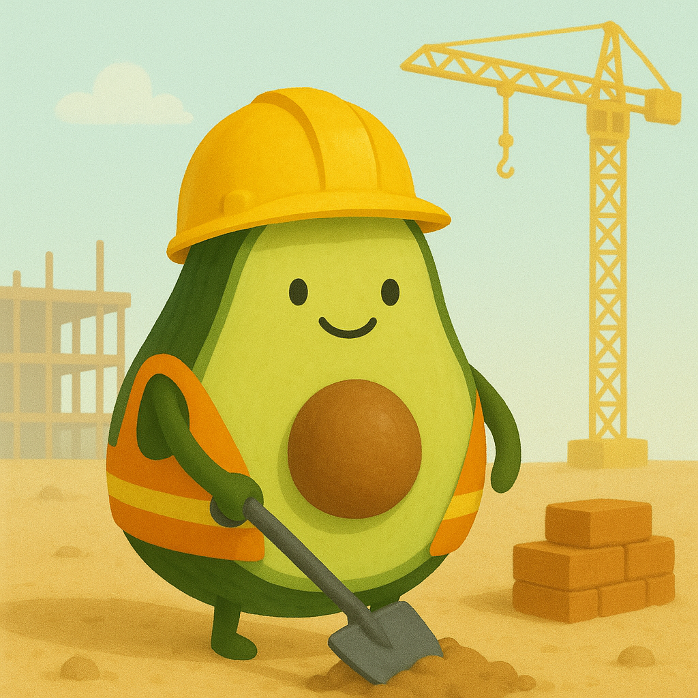
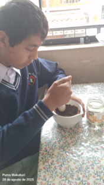
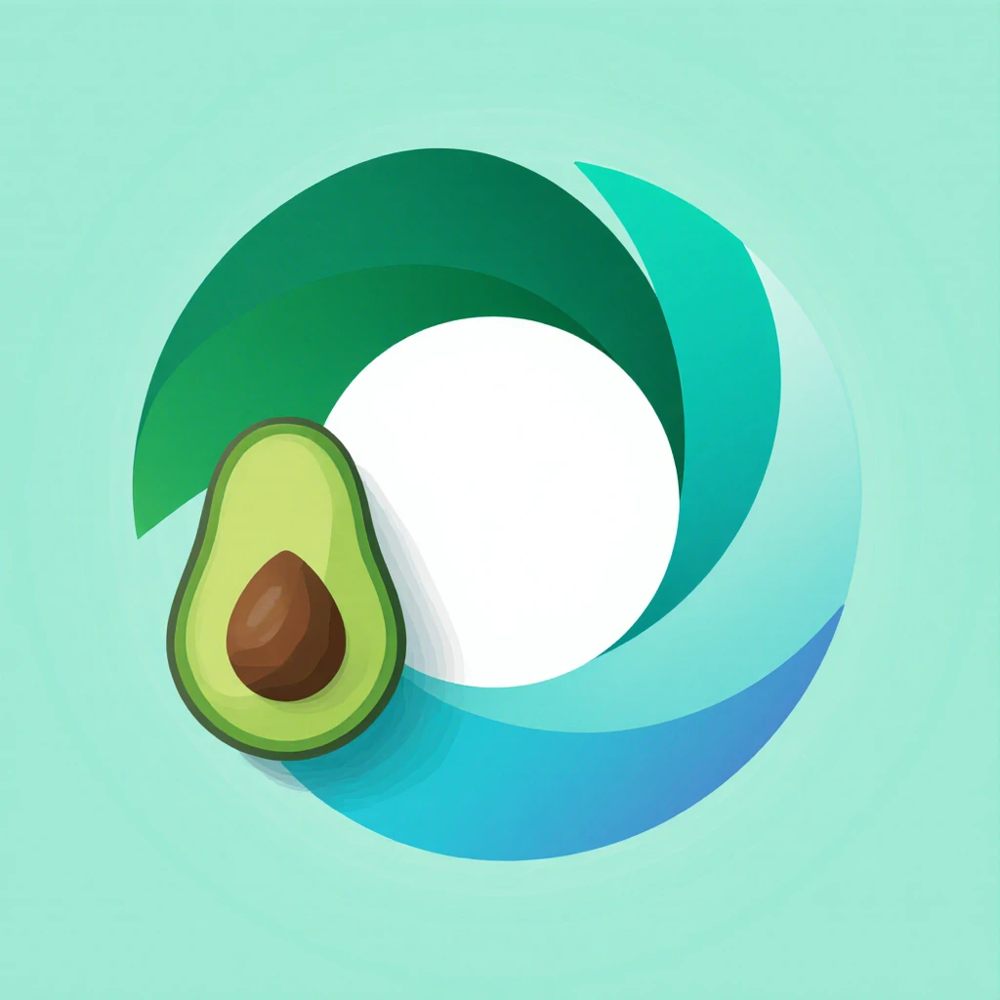

Nuestra propuesta
Creemos en segundas oportunidades. Rescatamos la pulpa de paltas que ya no llegan a los mercados y la transformamos en una harina nutritiva y versátil. Así, reducimos el desperdicio y damos valor a lo que la naturaleza nos regala.

Nutripalta
En Nutripalta convertimos creatividad y palta en innovación. Nuestra harina nace como una alternatativa diferente: donde nuestra mayor prioridad es que nuestro producto cumpla con ser nutritivo, versatil y sostenible.

Nuestro Producto
No es una harina cualquiera: concentra la esencia de la palta en una forma práctica y sorprendente. Su riqueza en fibra y grasas buenas la hace un aliado para el bienestar, mientras que su textura ligera se adapta desde panes artesanales hasta postres innovadores. La harina de palta abre la puerta a experimentar en la cocina con un ingrediente diferente, nutritivo y lleno de carácter.

Harina de palta
Aquí unas imágenes de nuestro producto



Nuestros ideales
Nos basamos en distintos ideales para crear nuestro proyecto
Valor único
Un producto diferente con la esencia de la palta.
Conocimiento hecho harina
Transformamos la palta en innovación alimentaria
Crecimiento nutritivo
Un alimento que aporta beneficios reales para tu bienestar y tu cocina.
Conexión natural
Un ingrediente que une sabor, nutrición y sostenibilidad en cada preparación.
Proceso simple
Lo esencial de la palta convertido en harina práctica.
Ligereza que vuela
Una harina suave y versátil, lista para llegar a todas tus recetas.
Innovación en cada grano
Transformamos la pulpa de palta en harina para darle nueva vida a lo que antes se desperdiciaba.
Ciclo renovado
Damos nueva vida a la pulpa de palta, evitando desperdicios y transformándola en harina versátil.
Tendencia verde
La harina de palta se convierte en un ingrediente actual que conecta sabor, salud y sostenibilidad.
Energía natural
Aporta fibra y grasas buenas que brindan vitalidad de forma saludable.
Un mensaje verde
Cada grano comunica sostenibilidad, nutrición y sabor
Origen local
Nacida de nuestra tierra, pensada para todos.
Video Promocional
Nuestro material promocional

☰